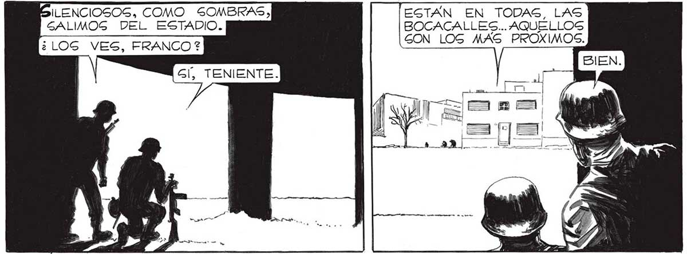
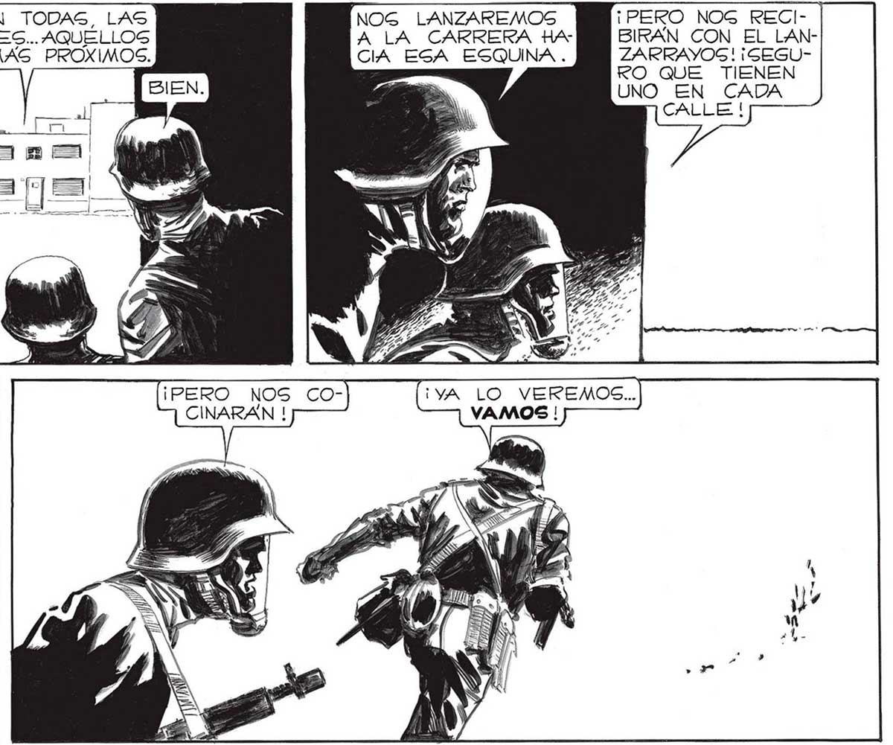
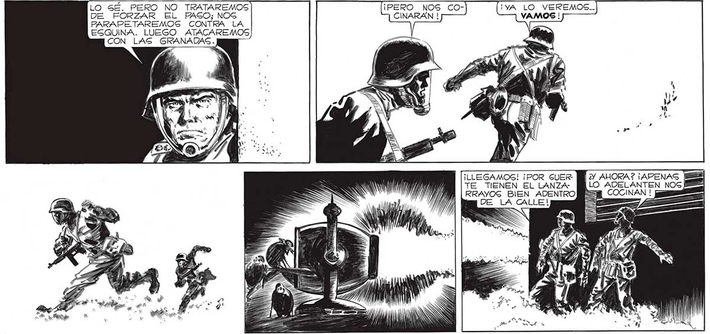

136 SILENCIOSOS, COMO SOMBRAS, GALIMOG DEL ESTADIO. ¿LOG VES, FRANCO ? LO SÉ. PERO NO TRATAREMOS DE FORZAR EL PAGO; NOG PARAPETAREMOS CONTRA LA ESQUINA. LUEGO ATACAREMOS CON LAS GRANADAS. ; r ESTÁN EN TODAS, LAS BOCACALLES... AQUELLOS GON LOS MAS PROXIMOS. 'NOG LANZAREMOS A LA CARRERA HA CIA EGA ESQUINA . ¡PERO NOS COCINARAN ! ¡LLEGAMOS! ¡POR SUERTE TIENEN EL LANZARRAYOSGS BIEN ADENTRO ¡PERO NOG RECI- | BIRAN CON EL LANZARRAYOS! ¡SEGURO QUE TIENEN UNO EN CADA CALLE ! "¿Y AYORA? ¡APENAS LO


